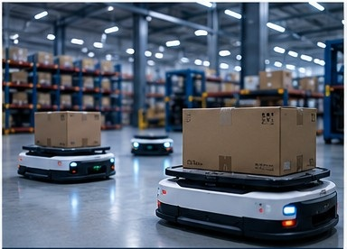
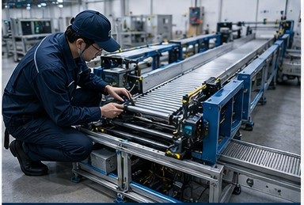

システム製品の現場実装支援
制御システム、ロボット、情報システム——技術製品を実際の現場に実装し、安定稼働させます。
システム製品の現場実装におけるリスク予測不足
現場の問題
システム製品はデモ段階では想定されたシナリオに基づいていますが、実際の現場では多くの適応が必要となります。機能調整、API修正、システム連携、プロセス最適化。リスクが事前に発見されないまま、納期遅延や運用負荷の増大につながります。
出雲創安の解決策
システムインテグレーション、現場実装、運用保守の視点を持ち、製品、現場プロセス、システムの関係性を同時に理解します。
私たちは「現場実装前のリスク予測」を重視——システム導入前に機能適合性、API調整の必要性、プロセス適合性、リスクポイントを積極的に確認し、実施方案と対応戦略を事前に提案します：
- ✓ 現場実装リスクの低減
- ✓ 追加修正の削減
- ✓ 納期の短縮
- ✓ システム導入成功率の向上

海外技術が日本の現場環境に適応しにくい
現場の問題
海外のシステム製品が日本に導入される際、言語の壁、現場規格の差異、協業方法の違い、長期的な運用保守要件の不明確さなどの課題に直面します。日本の現場に精通したローカルエンジニアリングチームが不足していると、システムは真の意味で現場に根付きません。
出雲創安の解決策
日本の現場規範と施工基準に精通し、海外技術にローカライズされた現場実装支援を提供します。
設置と調整を実行するだけでなく、規範の確認、複数メーカー間の調整、施工計画の策定、安全ルールの管理、長期的な運用保守体制の構築にも積極的に関与します。
ローカライズされた現場エンジニアリング能力により、お客様に以下のメリットを提供します：
- ✓ 海外技術の日本における導入成功率の向上
- ✓ 現場実装の抵抗低減
- ✓ 持続可能なローカル運用体制の構築

システム検収から実際の運用までの間にギャップが存在
現場の問題
システム検収時には各種技術基準を満たしていても、実際の現場運用で問題が発生することがあります。操作習慣、プロセスの変更、環境制約、複数システムの連携、実際の負荷などの要因は標準的な検収では完全に評価できず、効率の不安定さや現場での問題多発につながります。
出雲創安の解決策
システム導入と引渡しトレーニングを提供するだけでなく、「システム安定稼働後の現場適応」を重視します。
現場の実際の稼働状況を観察し、お客様の運用方法の継続的な最適化を支援します。例えば、ロボット搬送システムでは、呼び出し台数の増加により輻輳やスケジュールの競合が発生する可能性があります。現場観察、データ分析、プロセス調整を通じて、システムと運用の継続的な適合を支援します。
- ✓ システムの実稼働効率の向上
- ✓ 現場運用における問題の削減
- ✓ システムと現場の継続的な適合最適化の実現
私たちは現場実装サービスを提供するだけではありません
現場の評価、システムの実装、長期的な運用保守、継続的な改善をサポートします。
出雲創安は、システム製品と現場の架け橋となることを目指しています。